Technology
Colour with depth
A water-based multicolour decorative coating with very fine granules. It gives a refined, even texture that sits calmly in a contemporary interior.
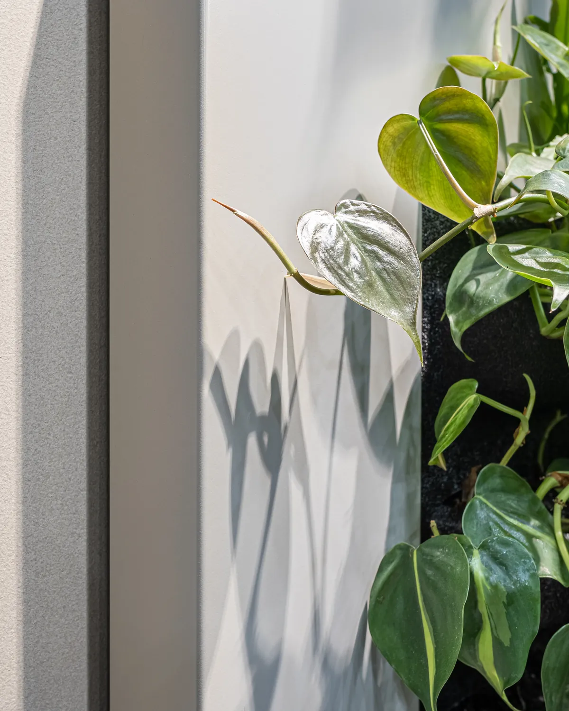
01Up close
From the wall to the granule
One coating, DV 033 Honey, from four distances: a calm surface from afar, a mosaic of granules up close.
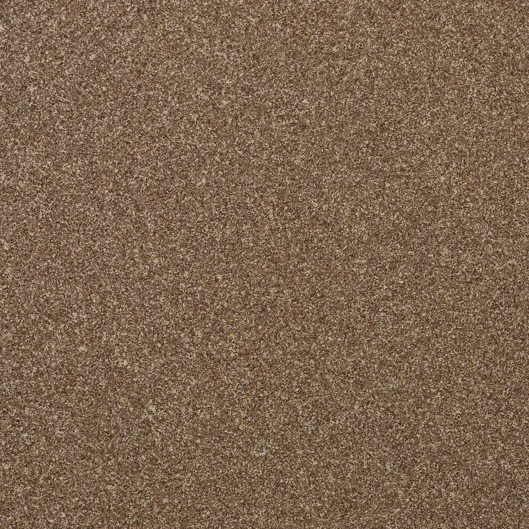
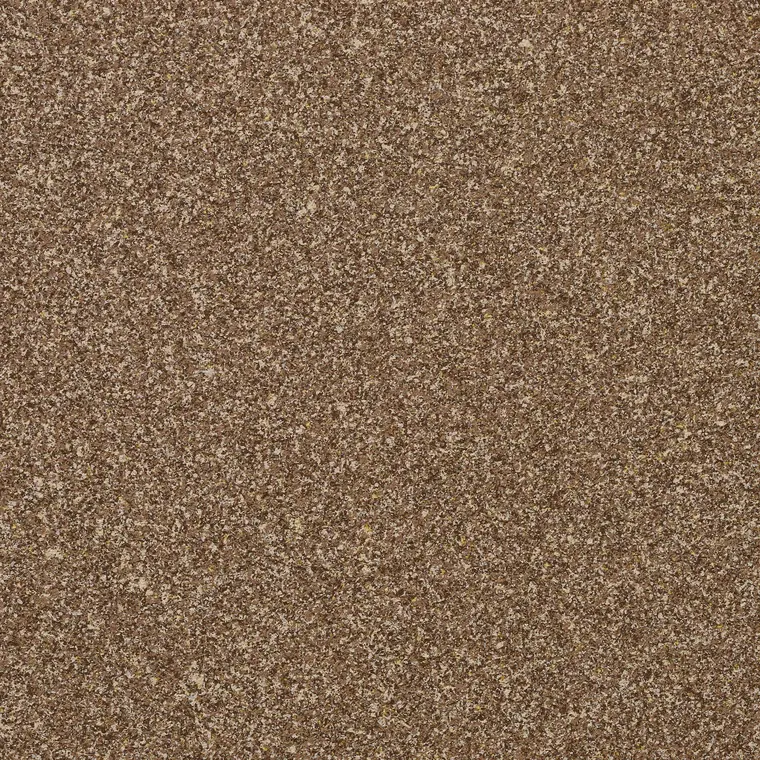
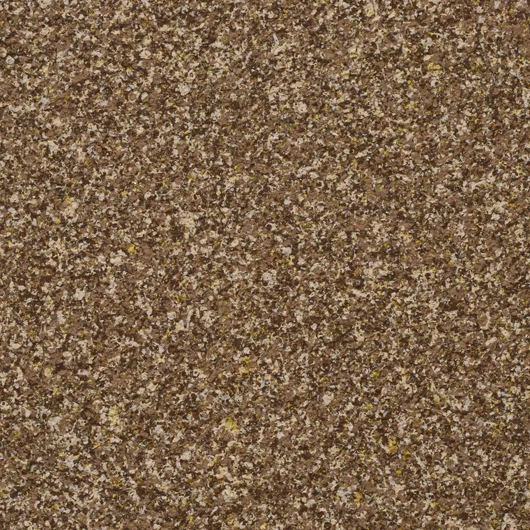
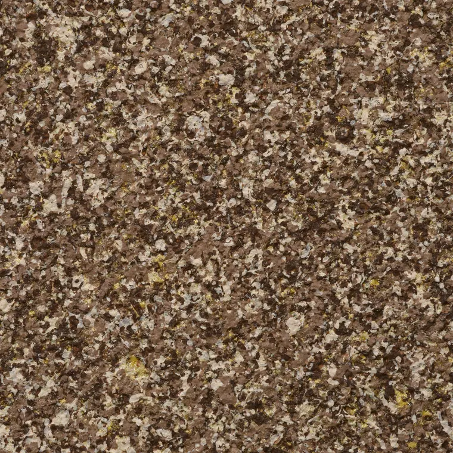
- 01
Wall
From a step away the coating reads as one deep colour.
- 02
Texture
Closer in, the grain appears: fine, even, never blotchy.
- 03
Granules
Granules of several colours lie side by side and never blend.
- 04
Mosaic
Under a macro lens, thin flakes of colour over the base tone build a three-dimensional mosaic.
Coating properties
Low VOC
Volatile organic compounds: below 30 g/l.
Consumption
Base consumption from 200 ml/m². The generator gives an estimate of the volume for your area.
Made to order
From 2 L in 1 L steps: you order exactly as much as you need.
Water-based
Wear resistance
Highly wear-resistant: the coating is washable and stands up to regular wet cleaning.
Eco-friendly
Suitable for children’s rooms and spaces with strict environmental requirements.
Breathable
The wall can still breathe: vapour passes through.
Optical stability
Odour-free
Seamless local repair
A damaged spot is repaired locally: once dry, it blends into the texture with no visible seams.
Fine granules
A very fine grain gives a refined, even texture without blotches.
Technical data sheets (TDS) and application guidelines are available in the Dvatone Telegram bot.
Open in Telegram02The coating system
Four layers, one surface
The multicolour coating works as a system: each layer has its own job.
- 01
Substrate
A prepared wall. The substrate requirements are in the technical data sheets (TDS).
- 02
Primer
Evens out how the substrate absorbs and sets the base tone the mosaic opens up on.
- 03
Multicolour coat
Sprayed on: granules of several colours form a three-dimensional mosaic.
- 04
Protective layer
A clear layer where needed, for spaces that see heavy use. A consultant will tell you whether your project needs it.
A Dvatone consultant confirms the build-up and the quantities for your project.
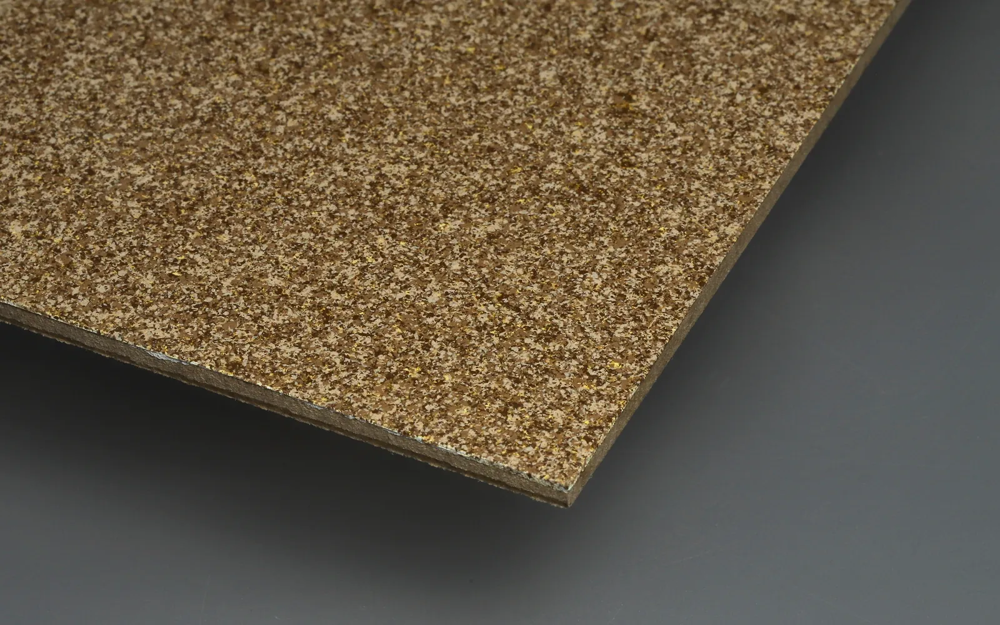
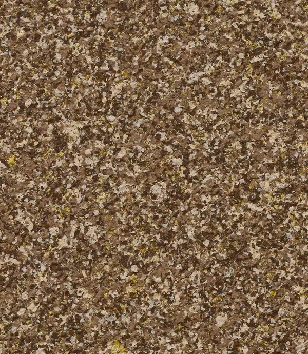
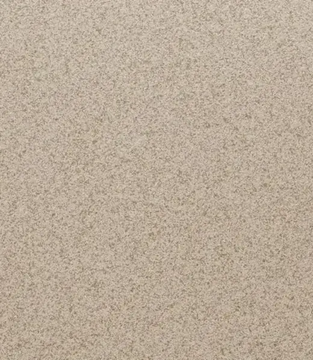
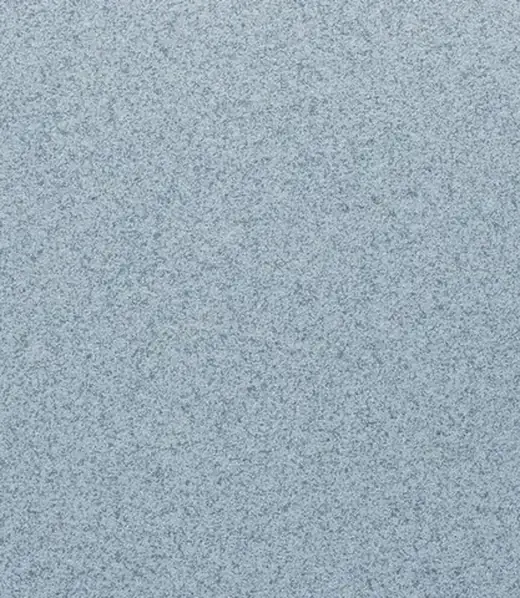
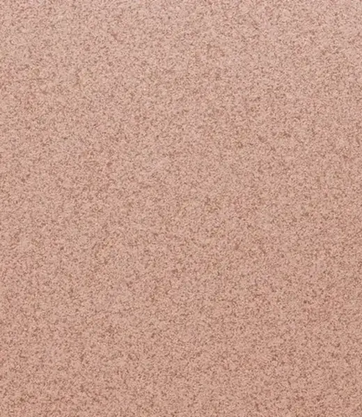
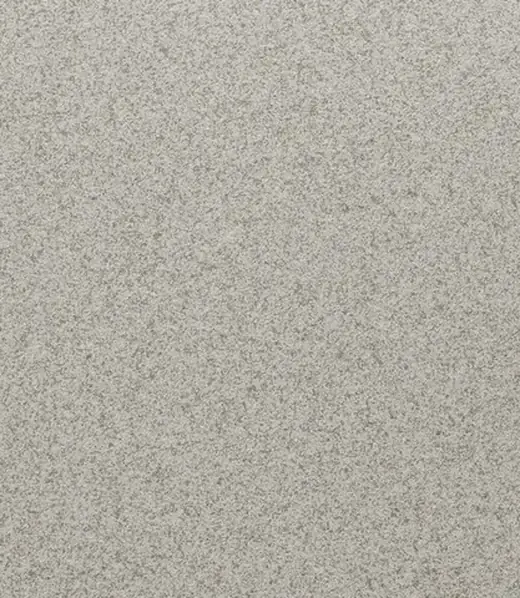
03About Dvatone
Colour is a feeling, not a code
Dvatone makes a multicolour decorative coating for interiors. A sample shows a colour, but it cannot tell you how that colour will play with the light in your home. So we show depth, texture and the subtle shifts of tone.
We are based in Kyiv. The coating is made in the volume you need, from 2 L.
For homeowners
A confident choice of coating that you will enjoy for years.
For designers and architects
A precise tool for choosing a coating for a project and presenting it to a client.
04How it works
How the mosaic forms
The colours of the mosaic are not applied one at a time: the multicolour texture forms as the paint is sprayed on.
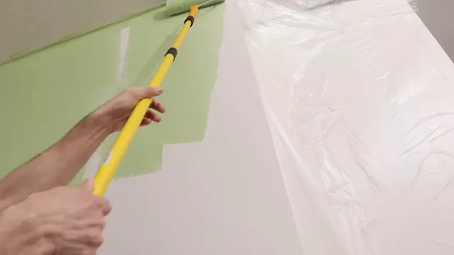
01Preparing the wall
The wall is prepared for application. The substrate and preparation requirements are in the technical data sheets (TDS) in the Dvatone Telegram bot.
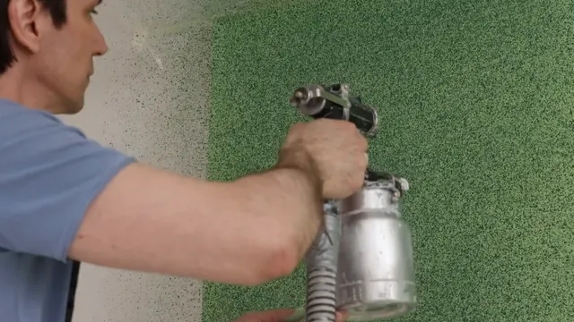
02Spray application
The paint is sprayed on with a compressor. The best results come from Rigo professional compressors (Italy) with a 2.5 mm nozzle.
- 03
The mosaic on the wall
Granules of several colours open up on the base tone and form a strong three-dimensional structure.
Stills from the Dvatone application film.
05Comparison
How Dvatone differs from ordinary paint
| Dvatone | Ordinary single-colour paint | |
|---|---|---|
| Look | A multicolour mosaic that forms as the paint goes on | A single flat colour |
| Depth | A three-dimensional structure that looks deeper and richer | A flatter surface |
| Resistance | Far more resistant to wear and tear, washable, fine with regular wet cleaning | Less resistant to wear and tear |
| Damage | A damaged spot is repaired locally, with no visible seams | Often means repainting the whole wall from corner to corner |
Based on Dvatone’s product information.
European quality
European technology. AkzoNobel (Trimetal) raw materials.
Dvatone products are made with advanced European technology and raw materials from the AkzoNobel group, under its Trimetal brand.
See the texture for yourself
Order a Designer Box or build a composition in the generator.